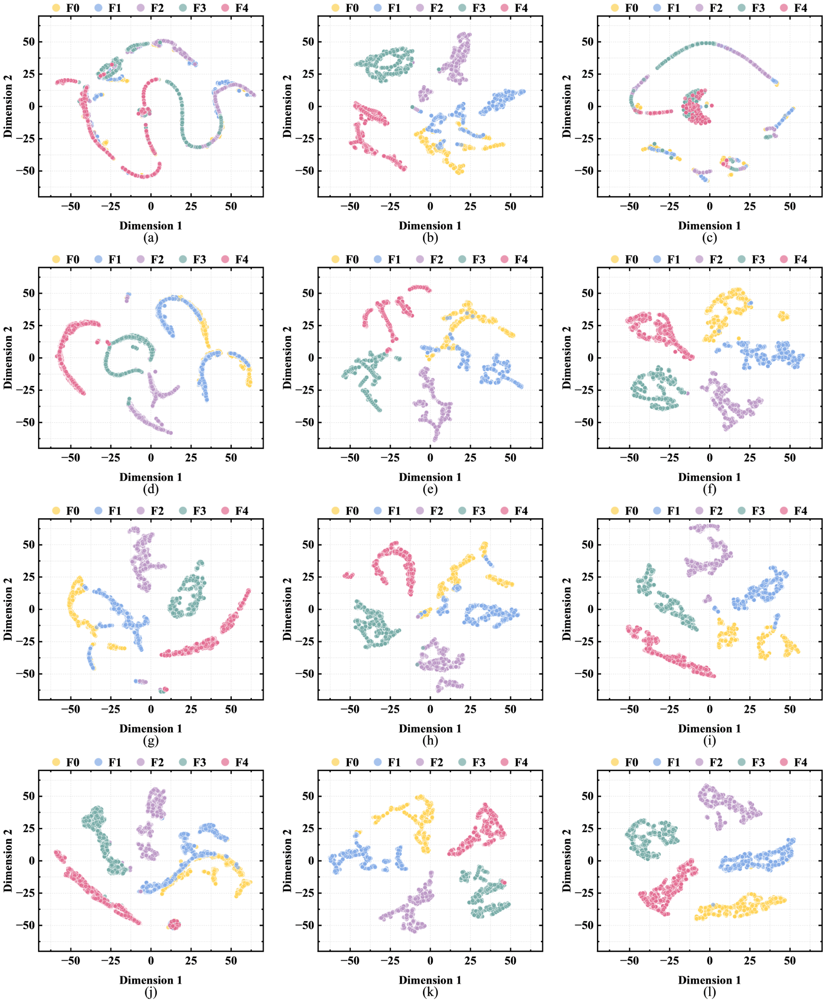

Abstract—Aiming at the issue that existing fault diagnosis methods for marine diesel engines often neglect the diagnostic value of information contained in control signals, this paper proposes a Control-Aware Domain Adversarial Network (CA-DANN) for injector system fault diagnosis across maneuvering-regime distributions. Based on the diesel engine’s physical characteristic where control signals dominate state signals, the CA-DANN employs a novel weighted fusion mechanism, which multiplies the features extracted from the state signals by the features extracted from the control signals using weight parameters that are generated by the control branch from the control signals and compressed into the interval (0,1) through a sigmoid function. Meanwhile, the CA-DANN establishes a fine-grained domain-adversarial framework, in which the maneuvering-regime discriminator replaces the conventional binary classification—which distinguishes only between the source and target domains—with a multi-class formulation, to maintain stable fault diagnosis performance across maneuvering-regime distributions. Experiments on simulation data from a thermodynamic model show that compared with mainstream methods, the proposed approach exhibits stronger robustness when control sensors drop out. The absence of real-engine validation is currently a limitation of this work. Consequently, future validation and optimization on a real engine would be highly desirable.
Among various power systems, diesel engines are widely used as the power source for ships due to their high efficiency(Desantes et al., 2002), high reliability(Hountalas and Kouremenos, 1999), and favorable fuel economy(Hou et al., 2020; Hountalas, 2000; Wang et al., 2021). Their operating status is directly related to the safety of marine navigation(Varbanets et al., 2021; Xu et al., 2020). Consequently, fault diagnosis for marine diesel engines has become a critical technological requirement(Qi et al., 2020).
Fault diagnosis methods for marine diesel engines can be categorized into physics-based methods and data-driven methods(Minchev et al., 2021). Physics-based fault diagnosis methods use mathematical or physical models to characterize the operating behavior of marine diesel engine, simulating and predicting its performance under different conditions. Fault determination is made based on the deviation between measured and simulated data, offering strong physical interpretability(Gharib and Kovács, 2023; Y Liu et al., 2023; Luo et al., 2025; Lv et al., 2024; Simani et al., 2003). Tang et al. established a closed-loop shafting model of a diesel engine using lumped parameter modeling and PID speed control, and further proposed a diagnostic method that locates cylinder power imbalance faults by analyzing the zero-phase positions of differential instantaneous speed waveforms between faulty and normal conditions(Tang et al., 2025). Kougiatsos and Reppa feed heterogeneous pressure, temperature, and speed sensor measurements into a mean-value first-principle engine model whose nonlinear estimators generate residuals with adaptive thresholds to detect and isolate sensor faults in a marine internal combustion engine(Kougiatsos and Reppa, 2024). He et al. introduced a thermodynamic mechanism-based key performance indicator (KPI) method, in which the predicted engine load and speed are used as input signals to identify multiple types of faults (such as compressor surge, oil leakage, and pressure abnormalities) in marine diesel engine turbocharging systems(He et al., 2021). Liu et al. build a digital-twin model of a marine engine from common engine sensors and solve an inverse problem with NSGA-III to compensate fuel-injection and air-intake inputs, identifying nozzle-hole wear, fuel-supply malfunction, and valve-train wear(Liu et al., 2025). Although physics-based simulation approaches have demonstrated strong interpretability, their diagnostic performance remains highly dependent on model fidelity. In complex and variable marine operating environments, the inaccessibility or uncertainty of internal engine parameters often limits modeling accuracy, thereby constraining the achievable fault diagnosis precision.
Data-driven methods bypass complex physical modeling, relying instead on historical monitoring data and employing machine learning algorithms to construct fault pattern recognition models for marine diesel engine fault diagnosis(Gharib and Kovács, 2023; Y Liu et al., 2023; Luo et al., 2025; Lv et al., 2024). Patil et al. input Fourier harmonic coefficients of in-cylinder pressure into linear and polynomial regression to estimate marine diesel engine fault severity(Patil et al., 2025). Costa et al. input marine diesel engine monitoring features (mainly left/right exhaust temperatures) into SVM, random-forest, KNN, and RUSBoosted-tree classifiers to classify fuel-injection-system faults(Costa et al., 2025). Zhao et al. input cylinder-head vibration signals (as wavelet time-frequency maps) into an axial-attention Transformer with a stepwise diffusion bridge for cross-domain fault diagnosis of marine diesel engines(Zhao et al., 2025). Sun et al. input exhaust gas temperature, air cooler outlet temperature, engine load, and turbocharger speed into a CNN-LSTM model with multi-layer attention to predict marine diesel engine exhaust temperature for fault warning(Sun et al., 2024). Xie et al. input 24 thermal parameters (reduced to 12; e.g., intercooler outlet velocity, peak combustion pressure, brake power, exhaust manifold outlet velocity) into a Bayesian-optimized random forest with Dempster–Shafer fusion to diagnose marine diesel engine faults(Xie et al., 2026).
However, existing data-driven approaches for marine diesel engine fault diagnosis mainly focus on modeling and analyzing state signals, while neglecting the direct influence of control systems and maneuvering behaviors on the engine states. Consequently, these methods fail to exploit the diagnostic value potentially embedded in control signals. In fact, both the change in rotational speed caused by maneuvering operations and the flow channel blockage caused by injector clogging affect the injection mass flow rate. Furthermore, the trends of these two effects are sometimes quite similar, as shown in Fig. 1; both a decrease in rotational speed and an increase in clogging lead to a decrease in peak injection quantity and an extension of the injection tailing. This similarity makes traditional diagnostic models prone to confusion between these two types of factors across maneuvering-regime distributions, leading to misdiagnosis.
Aiming at the above problems, this paper proposes a Control-Aware Domain Adversarial Network (CA-DANN) for fault diagnosis of the fuel injection system of high-speed marine diesel engines. The main contributions of this paper are as follows:
1) An innovative control-signal weighted fusion mechanism is designed within the CA-DANN, where the features extracted from control signals are multiplied by those extracted from state signals through weighting parameters. These weights are not fixed parameters; rather, they are generated by the control branch from the control signals and compressed into (0,1) by a sigmoid function, in order to amplify or suppress each individual dimension of the state-signal features. To systematically evaluate the impact of incorporating control signals on fault diagnosis performance, four control-signal configurations are designed, corresponding to cases without control input, with one, two, and all three control signals considered.
2) Based on the traditional DANN, the proposed CA-DANN establishes a fine-grained domain-adversarial framework. Within this framework, the maneuvering-regime discriminator replaces the conventional binary classification—which distinguishes only between the source and target domains—with a multi-class formulation. In this way, the Control-aware Feature Extractor is exposed to a more complex adversarial environment during training, enabling it to extract more generalized features that remain invariant to maneuvering-regime variations.
The rest of the paper is organized as follows: Section 2 introduces the core methodology and module design of the proposed CA-DANN; Section 3 presents the experimental settings and result analysis; Section 4 summarizes the paper.
The proposed CA-DANN method for fault diagnosis of the marine diesel engine injection system across maneuvering-regime distributions first collects and preprocesses control and state signal data based on the hierarchically coupled injection system simulation model. Next, the control signals and state signals are input into a dual-branch structure of the feature extractor, where each path is modeled, and a control-state coupled fusion is achieved via weights generated by the control branch from the control signals and compressed into (0,1) by a sigmoid function. Finally, a fine-grained domain adversarial framework and a Gradient Reversal Layer (GRL) are introduced to obtain domain-invariant feature representations across maneuvering-regime distributions, ultimately achieving high-accuracy fault diagnosis under complex maneuvering scenarios.
The structure of the hierarchical coupled thermodynamic simulation model of the high-speed four-cylinder marine diesel engine with an inline injection system is shown in Fig. 2. It mainly consists of a camshaft, a lift pump, four in-line injection pumps, and four injectors. The camshaft receives the input rotational speed and transmits it to an eccentric cam that drives the lift pump and four parabolic profile cams that drive the injection pumps. The lift pump supplies fuel to the inlet of the injection pumps, which in turn supply fuel to the injectors. The injectors discharge the fuel into their respective engine cylinders. Each injection pump consists of a cam-driven plunger, a delivery valve, and a governor, which controls the amount of fuel the plunger delivers to the engine cylinder.
The model also includes other components. The Pipe module simulates the pipe flow dynamics in an isothermal liquid network due to viscous friction losses. The Spring-Loaded Accumulator module simulates a spring-charged accumulator in an isothermal liquid network; liquid enters the accumulator and compresses the spring when the inlet hydraulic pressure is higher than the spring pre-load, and the spring releases the liquid when the hydraulic pressure decreases. The Pressure Relief Valve module simulates a relief valve in an isothermal liquid network, allowing liquid to flow only when a set pressure is reached. The Diesel Fuel Properties module defines the liquid property parameters at a constant temperature for the connected isothermal liquid network. The Solver Configuration defines the solver settings used for simulation calculation. The Reservoir module sets constant or controlled boundary conditions in the isothermal liquid network.
The overall architecture of the proposed Control-Aware Domain Adversarial Network is illustrated in Fig. 3. It consists of three main modules: the Control-aware Feature Extractor, the Clogging Degree Classifier, and the Maneuvering Regime Classifier.
According to the intrinsic physical logic of diesel engines, control signals represent the operational commands that actively regulate the system, whereas state signals describe the actual operating conditions of the engine, passively responding to control changes. Therefore, unlike conventional approaches that simply concatenate control and state signals for parallel input, the CA-DANN introduces an innovative control–state coupling mechanism. Specifically, a bifurcated Control-aware Feature Extractor is constructed, composed of a state-signal feature extraction branch and a control-signal feature extraction branch, each designed with distinct modeling pathways to capture their respective signal characteristics.
The state-signal feature extraction branch takes the mass flow rates collected from four injectors as input, while the control-signal feature extraction branch receives the shaft angular velocity, cam velocity, and cam position measured from the camshaft. The extracted control-signal features are then multiplied with the state-signal features using weighting parameters generated by the control branch from the control signals and compressed into (0,1) via a sigmoid function, enabling the model to adaptively emphasize control-aware interactions.
The Clogging Degree Classifier is designed to identify the clogging severity of injectors, where the thickness of the outer circle in Fig. 3 represents different clogging levels. The Maneuvering Regime Classifier distinguishes between different maneuvering regimes, with the arrow directions in the rectangular boxes indicating acceleration, deceleration, or steady-state regimes.
Sample 1 (orange) and sample 2 (blue) in Fig. 3 represent signal samples collected under different maneuvering regimes and fault states. Although their state signals exhibit high temporal similarity, relying solely on state features can easily lead to misclassification. The incorporation of control signals enables the Control-aware Feature Extractor to capture the coupling relationship between control and state dynamics, effectively separating samples from different maneuvering regimes and fault states in the feature space, thereby significantly improving both maneuvering regime discrimination and fault identification accuracy.
Furthermore, to address the complexity arising from multi-regime distributions within both the source and target domains, the CA-DANN constructs a fine-grained domain adversarial framework. Unlike the conventional binary-classification DANN(Ganin et al., 2016), which distinguishes only between the source and target domains, the maneuvering-regime classifier in the fine-grained domain-adversarial framework performs K-class classification (here K = 7, comprising one constant-speed source condition A and six variable-speed target conditions B–G), enabling the model to maintain stable fault diagnosis performance under varying operating conditions.
The structure of the Control-aware Feature Extractor is shown in the left part of Fig. 3. The raw features at the input layer consist of two parts: control signals and state signals.
In the control-signal feature extraction branch, for a given control input, a healthy system is expected to exhibit consistent amplitude and phase variation patterns both within each cylinder and synchronously across cylinders. Based on this consideration, it is essential to extract features from multiple perspectives. The control signal \(x_{\text{control}}\), including shaft angular velocity, cam velocity, and cam position, are first fed into the Multi-Head Attention (MHA) module(Vaswani et al., 2017), which projects the features into different subspaces via parallel linear projections (corresponding to attention heads). The number of attention heads is \(h = 4\), with \(Q = K = V\) representing the control signals themselves. When all three control signals are incorporated, the head dimension is \(d_k = d_v = 3\) (which reduces to 2 or 1 if only two or one signal is utilized, respectively). This structure endows the model with the capability to capture diverse and complex dependencies among control variables. To extract the key information in the temporal dynamics, the feature of the last time step of the MHA output, which retains the global information of the sequence, is taken:
\[h_1 = \text{MHA}(x_{\text{control}})_T \tag{1}\]
where \(T\) denotes the last time step of the input sequence.
The feature at the last time step is first fed into a Linear layer to project it to 128 dimensions, obtaining the feature, and then passed through the Channel Attention module (SE-Net)(Hu et al., 2018). Within the SE-Net, the Squeeze operation aggregates the global information of each feature channel, while the Excitation operation captures the inter-channel dependencies. This process adaptively reweights the feature channels, amplifying those that contribute more to fault discrimination and suppressing less informative ones, resulting in the feature \(h_3\).
To preserve the original expressive capability of the input features, the weighted result is combined with the output of the preceding Linear layer via a residual connection:
\[z_{\text{control}} = \sigma(h_2 + h_3) \tag{2}\]
where \(\sigma(\cdot)\) is the sigmoid activation function, defined as \(\sigma(x) = \frac{1}{1 + e^{-x}}\).
In the state-signal feature extraction branch, the state signals \(x_{\text{state}}\), i.e., the mass flow rates, are the most direct indicators of injector clogging. The information they contain, such as the rise slope, peak amplitude, and injection duration, is highly time-dependent and easily influenced by sensor noise and random fluctuations. The Long Short-Term Memory (LSTM) module(Hochreiter and Schmidhuber, 1997) can effectively capture the temporal evolution of the injection process, while its gating mechanisms—especially the forget gate—enable the model to ignore irrelevant noise.
The hidden state of the last time step is taken:
\[z_{\text{state}} = \text{LSTM}(x_{\text{state}})_T \tag{3}\]
The features from the two output paths, \(z_{\text{control}}\) and \(z_{\text{state}}\), are multiplied to form the fused feature \(z\), which serves as the input feature for the downstream classifier and domain discriminator:
\[z = z_{\text{control}} \odot z_{\text{state}} \tag{4}\]
where \(\odot\) denotes element-wise multiplication.
The structure of the Clogging Degree Classifier is shown in the upper right part of Fig. 3. The feature \(z\) extracted by the feature extractor is mapped to a hidden space via a linear transformation, followed by a ReLU activation function to enhance non-linear expressive capability, and finally, through a second linear layer, directly outputting the logits:
\[y_{\text{clog}} = W_{\text{clog2}}(\text{ReLU}(W_{\text{clog1}}z + b_{\text{clog1}})) + b_{\text{clog2}} \tag{5}\]
where \(W_{\text{clog1}}\) and \(b_{\text{clog1}}\) are the weight matrix and bias term for the first Linear layer, and \(W_{\text{clog2}}\) and \(b_{\text{clog2}}\) are for the second Linear layer.
Finally, an argmax operation is performed on the output logits to obtain the predicted clogging degree, where the index of the maximum value corresponds to the classified category.
The structure of the Maneuvering Regime Classifier is shown in the lower right part of Fig. 3. In the Maneuvering Regime Classifier module, the extracted feature \(z\) is first passed through a Gradient Reversal Layer (GRL). The GRL maintains the features unchanged during the forward propagation; during backpropagation, it takes the gradient from the subsequent layer, multiplies it by a factor \(-\lambda\) (where \(\lambda\) is a hyperparameter), and reverses the gradient direction before passing it to the preceding layer. After the GRL, the feature sequentially passes through a Linear layer, a ReLU activation function, and a final Linear layer, directly outputting the logits:
\[y_{\text{regime}} = W_{\text{regime2}}(\text{ReLU}(W_{\text{regime1}}z + b_{\text{regime1}})) + b_{\text{regime2}} \tag{6}\]
where \(W_{\text{regime1}}\) and \(b_{\text{regime1}}\) are the weight matrix and bias term for the first Linear layer, and \(W_{\text{regime2}}\) and \(b_{\text{regime2}}\) are for the second Linear layer.
By applying an argmax operation to the output logits, the predicted maneuvering regime is determined.
The loss of the Clogging Degree Classifier is defined as the multi-class cross-entropy:
\[\mathcal{L}_{\text{clog}} = -\frac{1}{N_s}\sum_{n=1}^{N_s}\log\left(\frac{e^{(y_{\text{clog}}^{(n)})_{c^{(n)}}}}{\sum_{c=1}^C e^{(y_{\text{clog}}^{(n)})_c}}\right) \tag{7}\]
where \(N_s\) is the total number of source domain samples, \((y_{\text{clog}}^{(n)})_c\) is the logit output for the \(c\)-th class for the \(n\)-th sample, and \(c^{(n)}\) denotes the ground truth class index (i.e., the actual clogging degree category) of the \(n\)-th sample (\(c^{(n)} \in \{0, 1, \dots, C-1\}\)).
The loss of the Maneuvering Regime Classifier is also defined as the multi-class cross-entropy:
\[\mathcal{L}_{\text{regime}} = -\frac{1}{N}\sum_{n=1}^{N}\log\left(\frac{e^{(y_{\text{regime}}^{(n)})_{k^{(n)}}}}{\sum_{k=1}^K e^{(y_{\text{regime}}^{(n)})_k}}\right) \tag{8}\]
where \(N = N_s + N_t\) is the total number of samples, \(N_t\) is the total number of target domain samples, \((y_{\text{regime}}^{(n)})_k\) is the logit output for the \(k\)-th condition for the \(n\)-th sample, \(K\) is the total number of maneuvering regimes, and \(k^{(n)}\) is the actual maneuvering regime for the \(n\)-th sample (\(k^{(n)} \in \{0, 1, \dots, K-1\}\)).
The total loss function:
\[\mathcal{L}_{\text{total}} = \mathcal{L}_{\text{clog}} + \lambda \cdot \mathcal{L}_{\text{regime}} \tag{9}\]
where \(\lambda\) is the manually set domain regularization parameter, and in this paper, \(\lambda = 1\).
The data used in this paper was collected from the aforementioned marine diesel engine in-line injection system model. Twelve control signal monitoring points were set up within the camshaft subsystem, and four state signal monitoring points were set up within the injector subsystem. The specific placement of the monitoring points is indicated by the labeled nodes in Fig. 2(b) and Fig. 2(c). All monitoring points follow a unified labeling format MPi–j (\(i \in \{1, 2, 3, 4\}\), \(j \in \{1, 2, 3, 4\}\)), where \(i\) denotes the cylinder (or injector) index in the in-line injection system, and \(j\) identifies the signal type. In the camshaft subsystem, \(j\) ranges from 1 to 3, representing three types of control signals: shaft angular velocity (\(j=1\)), cam velocity (\(j=2\)), and cam position (\(j=3\)). In the injector subsystem, \(j=4\) corresponds to the state signal, representing the mass flow rate of the injected fuel. Since all four injectors share the same structural configuration, only one injector is schematically illustrated in Fig. 2(c) for clarity. The label MPi–4 denotes the state-signal monitoring point of the \(i\)-th injector.
For control signal acquisition, the parabolic cam takes the shaft angular velocity W as input and dynamically calculates the cam velocity V and cam position P by analyzing the cam profile. These three control signals are synchronously collected for all four camshaft subsystems. For state signal acquisition, the mass flow rate during the injection process is recorded for each of the four injector subsystems as a key indicator characterizing the operating status of the injector.
During data acquisition, complex operating environments were constructed by applying different acceleration and deceleration operations to simulate different maneuvering regimes, as detailed in Table 1. The acceleration between any two consecutive time points is kept constant. For the nozzle with no fault, the hole diameter is set to 0.4 mm (F0). The nozzle hole diameter is successively reduced to 0.35 mm (F1), 0.3 mm (F2), 0.25 mm (F3), and 0.2 mm (F4), to simulate injector fault scenarios with different degrees of clogging. A total of seven maneuvering regimes were set. Control signals and state signals were monitored for the injector under the five clogging states for each of the seven maneuvering regimes. The total sampling duration was 0.25 s, with a sampling frequency of 100 kHz, resulting in a total of 87,500 valid samples.
| Maneuvering Operation (Condition) | Acceleration Change Time (s) | Instantaneous Rotational Speed at that Time (rpm) |
|---|---|---|
| A. Constant Speed | \ | 955 |
| B. Decel | [0 0.25] | [955 931] |
| C. Accel | [0 0.25] | [931 955] |
| D. Accel-Decel | [0 0.125 0.25] | [941 955 941] |
| E. Decel-Accel | [0 0.125 0.25] | [955 941 955] |
| F. Accel - Decel - Accel | [0 0.0833 0.1667 0.25] | [947 955 947 955] |
| G. Decel - Accel - Decel | [0 0.0833 0.1667 0.25] | [955 947 955 947] |
In real-world applications, models are often developed based on data from stable operating conditions but need to maintain robust performance under complex and variable working conditions. This paper divides the 12,500 samples from the constant speed condition (A) into the source domain data, and the 75,000 samples from the variable speed conditions (B, C, D, E, F, G) into the target domain data. A sliding window method is used to process the raw time-series data, with a window length set to 50, corresponding to a time span of 0.5 ms, and a step size set to 10, corresponding to a time span of 0.1 ms.
Model training adopts a mini-batch gradient descent strategy, with the batch size set to 32. The Adam optimization algorithm, based on first-moment estimation and second-moment correction, is used during parameter updates to accelerate model convergence and suppress gradient oscillations. The initial learning rate is set to 0.001. Fig. 4 summarizes the hyperparameters of the feature extractor under the weighted fusion mechanism.
To systematically evaluate the performance of the proposed method, two sets of comparative experiments were designed: first, the weighted fusion mechanism is replaced with a concatenation-based fusion, in which the features extracted from the control-signal and state-signal branches are directly concatenated along the feature dimension, instead of being adaptively weighted, to examine the effect of the weighted fusion mechanism on diagnostic performance; second, removing the domain discriminator from the DANN framework to evaluate the contribution of the domain adversarial mechanism to extracting more generalizable features. Based on these ideas, three types of models were constructed, as shown in Table 2.
| Model ID | Weighted Fusion | Concatenation-based Fusion | Maneuvering Regime Classifier |
|---|---|---|---|
| M1 | × | √ | √ |
| M2 | √ | × | × |
| M3 (CA-DANN) | √ | × | √ |
| Model | Accuracy with 0 type of control signal | Accuracy with 1 type of control signal | Accuracy with 2 types of control signals | Accuracy with 3 types of control signals |
|---|---|---|---|---|
| M1 | 43.55 | 90.2 | 94.17 | 94.97 |
| M2 | 95.96 | 97.95 | 98.41 | 99.21 |
| M3 | 43.55 | 98.77 | 99.61 | 99.82 |
On the target domain, this paper uses t-SNE to visualize the feature dimensionality reduction of the last layer of the classifier and compares the classification performance of each model through accuracy and confusion matrices. The results are shown in Fig. 5 and Table 3.
When no control signal is introduced, the control branch is removed entirely, and M1 and M3 degenerate into an identical structure; in this case the feature extractor reduces to an LSTM combined with the fine-grained domain-adversarial framework, whereas M2 is a pure LSTM classifier. In this case (Fig. 5(a)–(c)), the samples of different fault categories overlap markedly in the low-dimensional space, with the boundaries among F0, F1, and F2 being especially blurred, and the lowest accuracy is only 43.55%. As the number of introduced control-signal types increases, the intra-class samples become more compact, the inter-class boundaries become clearer, and the accuracy improves accordingly. Notably, with only one type of control signal introduced, the accuracy of M1 rises from 43.55% to 90.2% and that of M3 to 98.77%; this significant gain shows that even a small amount of control-signal information can effectively improve the feature distribution and classification performance.
Comparing the first column (Fig. 5(a), (d), (g), (j)) with the third column (Fig. 5(c), (f), (i), (l)), for the same non-zero number of introduced control signals, the accuracy of M3 is consistently higher than that of M1, and M3's intra-class distribution is more compact with larger inter-class distances. The weighted fusion mechanism consistently outperforms the concatenation-based fusion strategy under the same control-signal input, modeling the interaction between control signals and state signals more effectively.
Comparing the second column with the third column (Fig. 5(b), (e), (h), (k) vs. Fig. 5(c), (f), (i), (l)), when no control signal is introduced, the accuracy of M2 (95.96%) exceeds that of M3 (43.55%): adding the domain discriminator actually degrades classification performance, indicating that, in the absence of auxiliary information, the discriminator weakens the extraction of effective features. Once control signals are introduced, however, the model with the domain discriminator surpasses the one without it in both feature distribution and classification performance; for example, with three types of control signals, M3 reaches 99.82%, exceeding the 99.21% of the discriminator-free M2.
Under the optimal configuration of three types of control signals with the weighted fusion mechanism (Fig. 5(l)), the fault categories are clearly separated in the feature space, each forming a compact cluster with large inter-class distances, and the overall accuracy reaches 99.82%. This reflects the advantage of jointly modeling control-awareness and domain adaptation under complex maneuvering regimes.

| λ | Fault diagnosis accuracy (%) | Maneuvering-regime classifier accuracy (%) |
|---|---|---|
| 0.1 | 99.95 ± 0.08 | 0 |
| 0.5 | 99.75 ± 0.35 | 0 |
| 1 | 99.84 ± 0.30 | 0 |
| 2 | 99.74 ± 0.48 | 0 |
| 5 | 98.23 ± 2.00 | 0 |
| 10 | 96.28 ± 3.42 | 0 |
To examine the influence of the domain-regularization weight λ, we retrained the proposed method with λ ∈ {0.1, 0.5, 1, 2, 5, 10}. The fault-diagnosis accuracy remains stable over λ ∈ [0.1, 2]; the target-domain accuracy of the maneuvering-regime classifier is 0 % in all cases, indicating that the target features have been aligned to the source condition and that the operating conditions are no longer distinguishable. At λ = 10, the accuracy drops to 96.28 ± 3.42 %, indicating that excessively strong adversarial training impairs diagnosis.
Under identical inputs and the same source-/target-domain partition, we compared two non-domain-adaptation methods (CNN-BiGRU(B Liu et al., 2023) and Attention-LSTM(Y Liu et al., 2023)) with three standard domain-adaptation methods (binary-classification DANN, Deep CORAL(Sun and Saenko, 2016), and the Domain Separation Network (DSN)(Bousmalis et al., 2016)). As shown in Fig. 6(a), when all three control signals are introduced, the methods achieve comparable accuracies (99.71 %–99.97 %), with CA-DANN reaching 99.84 ± 0.30 % (the specific model used for the ablation and visualization studies attains 99.82 %). For all models trained with the complete set of control and state signals, the control-signal sensors were removed during testing and the corresponding control-signal channels were set to zero, so as to emulate sensor loss or damage on a real vessel. When the cam-position sensor is missing, CA-DANN maintains 87.40 % accuracy, whereas the second-best model achieves only 72.57 %; when all control signals are missing, the proposed method still attains 81.84 %, significantly higher than the 68.75 % of the second-best model. Because the per-channel weights generated by the CA-DANN control branch are constrained to (0,1) by the sigmoid function, they vary only slightly when control signals are missing or noisy, so the state branch can still perform diagnosis; by contrast, models that feed the control signals directly as raw inputs propagate the missing or noisy values straight into the features, causing a sharp performance drop.
To assess the noise tolerance of the proposed method, we conducted separate tests in which additive Gaussian noise was injected into either the control signals or the state signals, with the signal-to-noise ratio (SNR) ranging from −6 to 10 dB; when noise was injected into the control signals, Gaussian noise of equal intensity was applied to all control signals. As shown in Fig. 6(b), injecting noise into the control signals has only a marginal effect, whereas injecting noise into the state signals causes a pronounced drop in accuracy, as the fault information itself becomes submerged in noise.
To evaluate the impact of control-component faults on diagnostic performance, we superimposed a constant bias on the normalized control signals to approximate the systematic deviations caused by actuator calibration drift or sticking. As shown in Fig. 6(c), the target-domain accuracy decreases gently as the bias increases, exhibiting a gradual rather than abrupt degradation, which can be used to delineate the safe operating range of the model.
All experimental results in this paper are based on a hierarchically coupled thermodynamic simulation model of the marine diesel engine in-line injection system. Given the limited availability of fault data acquired from real engines, this section discusses the feasibility of deploying the proposed method to real engines.
1. Artificially injecting and measuring faults on a real marine diesel engine is costly, subject to numerous constraints, and entails safety risks. Consequently, approaches that first generate labeled fault samples through physical simulation and then transfer them to real equipment have emerged(Jia et al., 2025). Dong et al. obtained simulated vibration signals by constructing a multibody dynamics model and, combined with the TrAdaBoost transfer-learning algorithm, achieved fault diagnosis of a marine turbocharger from the simulation model to the actual physical device(Dong et al., 2023). Shi et al. developed a dual transfer framework for marine diesel engine fault diagnosis, which applies features extracted from simulated responses to evaluate actual measured data under cross-engine and cross-condition scenarios(Shi et al., 2025). Hu et al. used finite-element simulation to generate low-cost fault data and, combined with deep transfer learning, achieved fault diagnosis of a marine turbocharger from simulation to the real engine(Hu et al., 2025).
2. The discrepancy between simulated and real data lies mainly in the fact that real measurements contain components not represented in the simulation: sensor noise, instrument characteristics, component wear, environmental variation, and so forth. The simulation in this paper is a deterministic thermodynamic model, and what CA-DANN learns is the relationship among the control signals, state signals, and clogging faults dictated by the diesel engine's underlying mechanism—a relationship that is expected to hold on real engines. With respect to the additional noise, channel loss, and similar components introduced by real data, the robustness experiments demonstrate that the proposed method possesses strong tolerance.
3. CA-DANN is itself a domain-adversarial framework and can be applied directly to simulation-to-real distribution alignment: by taking the present simulation data as the labeled source domain and a small amount of unlabeled real bench-test data as the target domain, and aligning the control-aware features through the fine-grained domain-adversarial framework, the model can be adapted to real operating conditions without requiring real fault labels.
4. The control and state signals required by the proposed method can be measured directly on real engines or replaced by equivalent quantities, so the input requirements can be satisfied in real deployment. It should be noted that the proposed method diagnoses injection clogging under the premise that the control components are fault-free; if a control component itself fails, it will contaminate the control signals, and the bias experiment in Fig. 6(c) approximates such miscalibration. Bench-test validation benchmarked against the diagnosis of vessels in real operation, simulation-to-real-engine adaptation, and the direct diagnosis of faults within the control components themselves constitute the focus of future work.
From the perspective of control–diagnosis collaboration, this paper proposes a Control-Aware Domain Adversarial Network to address the fault diagnosis problem of marine diesel engine injection systems across maneuvering-regime distributions. Under the control–state weighted fusion mechanism and the fine-grained domain adversarial framework, the model effectively captures the coupling between control and state signals, achieving self-consistent feature mapping and generalization resilience across maneuvering distributions.
The experimental data were collected from a hierarchically coupled injection system simulation model. To systematically verify the effectiveness of the proposed method, multiple comparative experiments were conducted to comprehensively evaluate the contribution of each module to diagnostic performance. The results show that introducing control signals significantly enhances the model’s fault recognition capability under cross-maneuvering distributions, and higher control-information richness leads to higher classification accuracy. Experiments show that CA-DANN is more robust than the compared methods when control sensors are missing, and that it maintains high accuracy even when the control signals are noisy or biased.
The proposed CA-DANN effectively overcomes the limitation of insufficient utilization of control information in data-driven diagnosis and provides a new perspective for intelligent operation and maintenance of marine diesel engines under complex maneuvering regimes. The reported results are preliminary exploratory findings obtained in simulation, and the absence of bench-test or real-engine validation is a limitation of this study. Future work will further explore the deep integration of control systems and diagnostic models, establishing an efficient collaborative mechanism between the electronic fuel injection control system and the fault diagnosis system under maneuvering influences.
The authors declare that they have no known competing financial interests or personal relationships that could have appeared to influence the work reported in this paper.
This work was supported by the National Natural Science Foundation of China under Grant No. 52105545 and the Open Fund of State Key Laboratory of Mechanical Transmission for Advanced Equipment under Grant No. SKLMT-MSKFKT-202529.
This study uses confidential data that cannot be shared publicly.